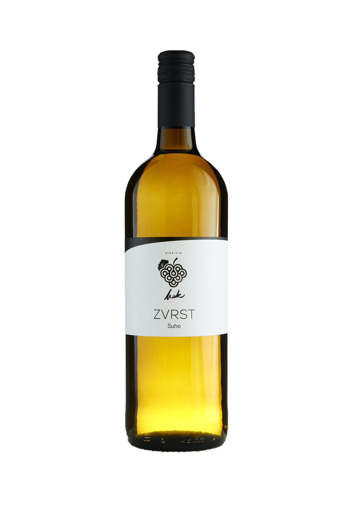
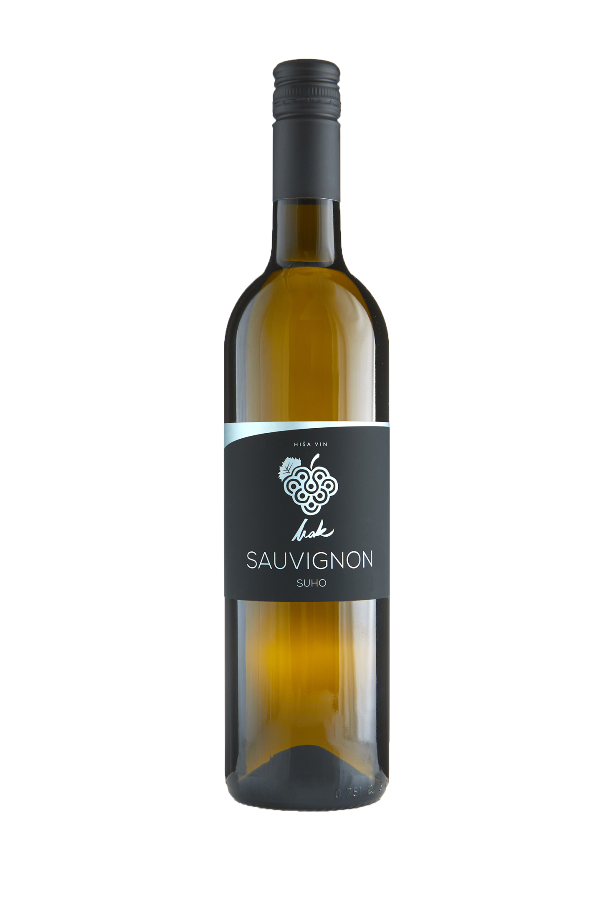
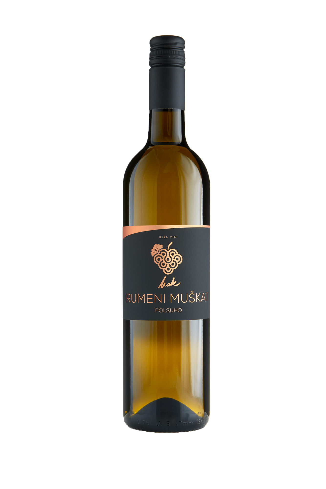
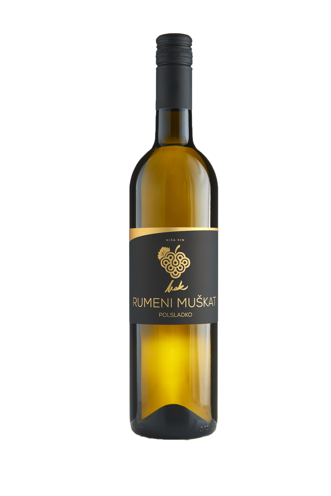
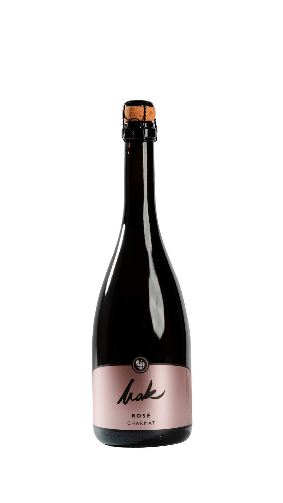

PONUDBA VIN
ZVRST - SUHO
Zvrst suho je vino, ki združuje najboljše lastnosti različnih sort v harmonično celoto. Njegov okus je uravnotežen, poln in prijeten, z lepim prepletom sadnih not in svežine. Idealen je za tiste, ki cenijo bogastvo mešanic in iščejo vino, ki je hkrati elegantno in dostopno.


SAUVIGNON - SUHO
V ponudbi Hiše vin MAK najdete kakovostna bela, rdeča, rosé in peneča vina iz domačih vinogradov, ustvarjena s poudarkom na tradiciji, svežini in pristnih okusih.
RUMENI MUŠKAT - POLSUHO
Rumeni muškat polsuho navdušuje s cvetličnim vonjem in prijetno sadno noto, ki jo lepo zaokroži nežna sladkoba. Vino je igrivo in prijazno do brbončic, zato je odlična izbira za tiste, ki želijo nekaj vmes – svežino suhega in mehkobo sladkega vina. Odlično se poda k predjedem, sadju in lahkim sladicam.


RUMENI MUŠKAT - POLSLADKO
Rumeni muškat polsladko razvaja s polnostjo in sladkobnim značajem, ki pa nikoli ne preglasi sadne svežine. Vino, ki je ustvarjeno za sladke trenutke in sproščene večere, kjer se išče lahkotno, a prijetno doživetje. Čudovita izbira k sladicam ali samostojno za uživanje ob posebnih priložnostih.
PENINA ROSE - POLSUHO
Penina Rosé zapelje s svojo nežno rožnato barvo in živahnimi, drobnimi mehurčki, ki prinašajo svežino v vsak požirek. V aromi razkriva preplet rdečih jagod, malin in rahlih cvetličnih not. V okusu je lahkotna, sadna in prijetno uravnotežena, z ravno pravšnjo živahnostjo, ki pusti čist in eleganten zaključek.
Popolna je za tople večere, sproščena druženja ali kot iskriv uvod v posebne trenutke.
